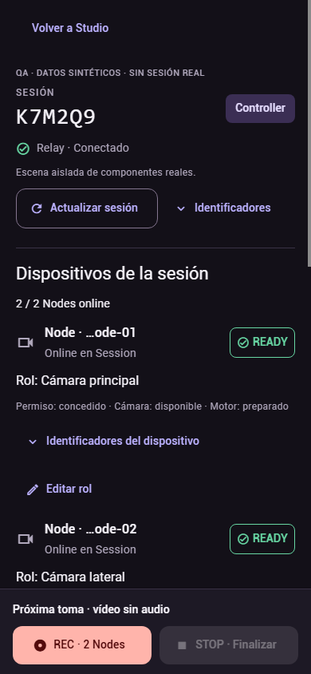
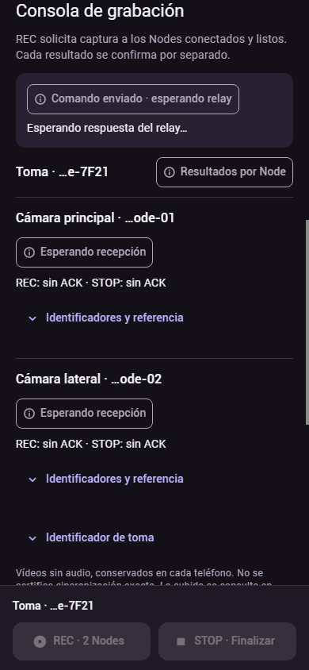
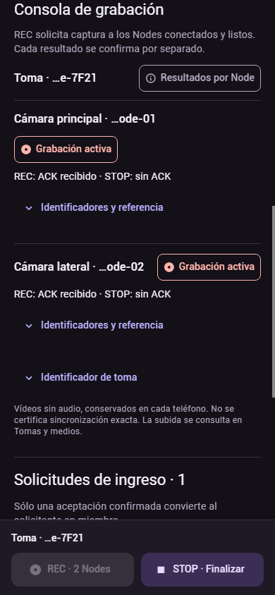
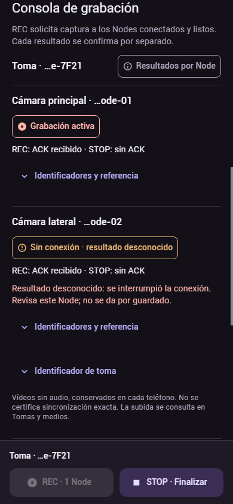
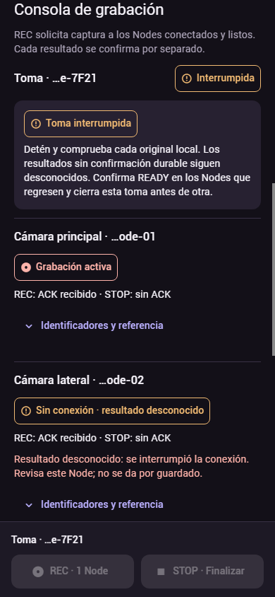
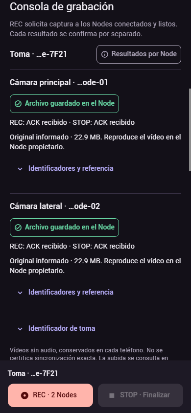
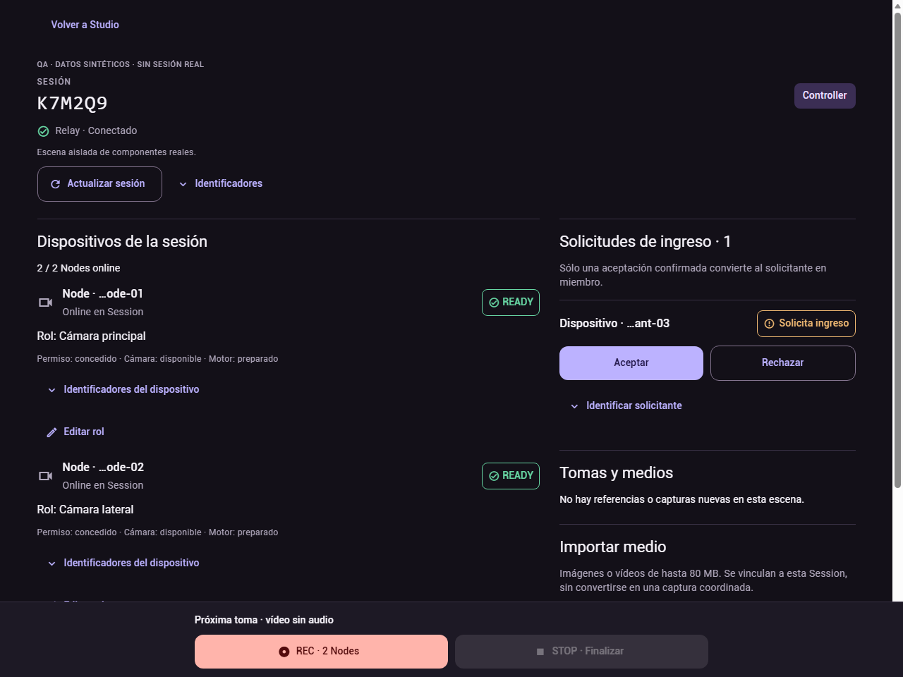

IMPLEMENTACIÓN CONSOLIDADA · MATERIAL DESIGN 3 · EXPO SDK 54
Una Session. Dos experiencias de operación.
Controller coordina; Node captura. La Etapa 2 integra toda la pantalla y sus medios con A / Consola. Estas capturas ejecutan los componentes reales de producción en Expo web, con datos sintéticos rotulados y servicios externos bloqueados. El encuadre Node es ilustrativo; no demuestra captura nativa ni archivos reales.
Informe completo, archivos, límites y prueba Android · 12 comprobaciones de interfaz · 17 comprobaciones del diff · Referencia A aprobada
Controller · preparar, enviar y comprobar
Preparado
Roles y READY independientes. REC/STOP siempre visibles.

Comando pendiente
Enviado no significa ACK, grabación ni archivo.

Grabación activa
ACK y fase se muestran por separado en cada Node.

Fallo parcial
El Node offline queda desconocido; otro conserva STOP.

Toma interrumpida
Reconciliar originales antes de cerrar y comenzar otra.

Archivos e historial
Archivo informado como guardado sigue siendo distinto de una subida.

Node · cámara y parada local
Seguridad de las acciones
Adaptable sin cambiar de propietario
Las columnas cambian por estilos; cámara y propietarios permanecen en el mismo árbol React. El tema claro conserva el mismo diseño.

Ruta real sin conexión
Esta captura sí utiliza /session/[id]. La red de servicios está bloqueada; no hay sesión real autorizada ni cámara conectada. Los paneles usan sus estados reales de error/vacío.
Sin cambios a relay, Auth/RTDB, protocolos, captura, roles o navegación global. La prueba Android y el flujo físico Controller + dos Nodes se registran como pendientes en el informe.